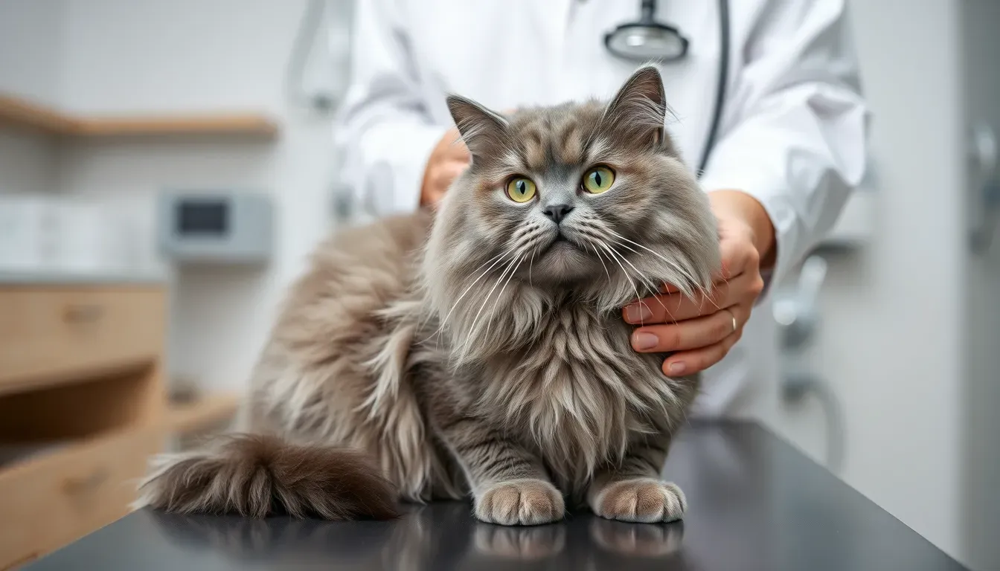

Узкие специалисты · круглосуточно
Узкие специалисты для вашего питомца
В «Ветлайфе» принимают кандидаты наук, нефролог, кардиолог, дерматолог, онколог, офтальмолог и стоматолог. Круглосуточно, у МЦК «Окружная».

Наши врачи
ДА
Дандал Али
Кандидат ветеринарных наук
НЕ
Никитина Е. К.
Ведущий врач-нефролог
ДБ
Дандал (Борисенко) Любовь Николаевна
Кандидат биологических наук, УЗ-диагностика, терапевт
ПА
Панкова Анастасия Михайловна
Стоматолог, хирург
ЦО
Цветкова Ольга Сергеевна
Дерматолог
И вся команда
Хирурги, терапевты, ветеринарный фельдшер, ассистенты и администраторы.
Направления
ТерапияВакцинацияЧипированиеХирургияСтерилизация и кастрацияТравматологияУЗИ и рентгенЭхоКГЛабораторияСтационарРеанимацияИнфекционный стационарНефрология и урологияКардиологияДерматологияОнкологияОфтальмологияСтоматологияНеврологияЭндокринологияГастроэнтерология и эндоскопияАкушерство и гинекологияГигиена и санитарная обработка
Запишитесь — мы на связи круглосуточно
Москва, Бескудниковский бульвар, 12, стр. 1 · МЦК «Окружная»